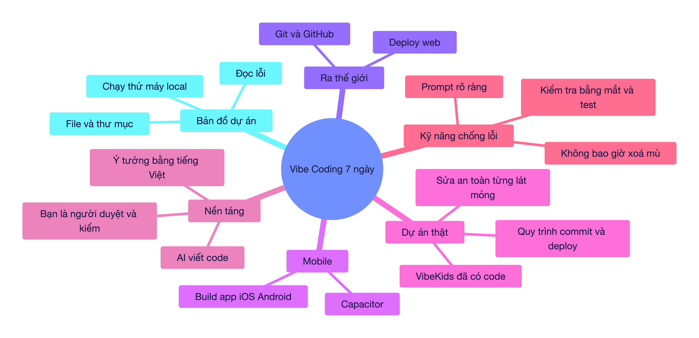
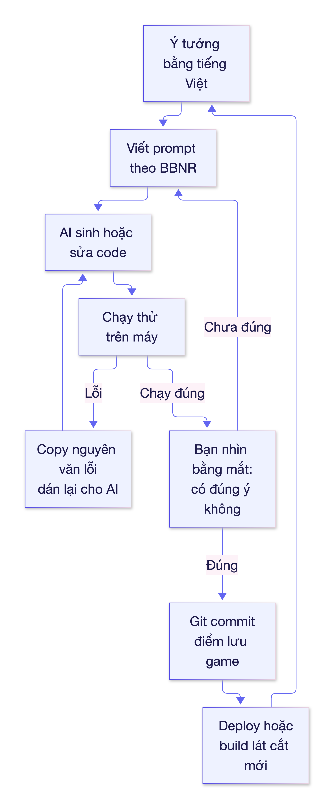

🎓 BUỔI 0 — HỢP ĐỒNG HỌC TẬP & BẢN ĐỒ LỘ TRÌNH VIBE CODING
Giáo viên: Tutor (Principal Master Tutor). Học viên: bạn — chưa biết gì về code, mục tiêu cả 3 hướng (web app riêng → deploy công khai; app mobile; nâng cấp
english-for-kids), nhịp intensive 7 ngày × 60–90 phút. Môi trường đã kiểm tra thực tế trên máy bạn: Node v26.4.0, pnpm 12.11.2, git 2.50.1, Python 3.9.6; dự ánenglish-for-kidsđã có git reposantabu107052/vibekids-english(deploy quapnpm run deploy→ GitHub Pages).
📍 1. BẢN ĐỒ TRI THỨC TỔNG QUAN (VISUAL MINDMAP)

🎯 2. MỤC TIÊU BÀI HỌC (LEARNING OBJECTIVES — thang Bloom)
| Mức Bloom | Cuối 7 ngày bạn làm được |
|---|---|
| Nhận biết | Nói được vibe coding khác "học lập trình truyền thống" ở đâu; nhận ra 1 file trong dự án làm gì. |
| Vận dụng | Tự tạo 1 web app mới, chạy trên máy, đẩy lên GitHub, có link công khai. |
| Phân tích | Đọc thông báo lỗi trong Terminal và biết phải hỏi AI đúng câu gì. |
| Sáng tạo | Tự sửa/nâng cấp dự án english-for-kids theo từng lát mỏng, biết rollback khi hỏng. |
🧱 3. HỢP ĐỒNG HỌC TẬP (7 BUỔI × 60–90 PHÚT)
| Buổi | Chủ đề | Ra được sản phẩm gì | Bet |
|---|---|---|---|
| 1 | Vibe coding là gì + bảng điều khiển Terminal | Biết mở Terminal, chạy 1 dự án mẫu do AI tạo | Học viên sẽ tưởng "AI viết là xong" → chốt nguyên tắc AI làm, bạn duyệt |
| 2 | Bản đồ dự án: file, thư mục, package.json, src/ |
Đọc được cấu trúc english-for-kids bằng mắt |
Sợ "code của người khác" → bóc 5 file quan trọng nhất trước |
| 3 | Prompt engineering trong vibe coding | Bộ 3 prompt mẫu: tạo mới / sửa lỗi / giải thích | Prompt mơ hồ = code sai → dạy công thức Bối cảnh – Việc – Ràng buộc – Nghiệm thu |
| 4 | Tự build web app mới từ số 0 (khung số 1) | App chạy localhost thật |
Sợ "không ra gì" → khung số 1 chỉ có 1 nút bấm đổi màu |
| 5 | Git, GitHub, deploy web công khai | Link web ai cũng mở được | Lỡ hỏng là mất code → dạy commit như "điểm lưu game" |
| 6 | Mobile: Capacitor + build iOS/Android | Biết cap sync/cap run trên code VibeKids |
Nghĩ app mobile phải viết lại từ đầu → hoá ra dùng lại web |
| 7 | Nâng cấp english-for-kids an toàn + nghiệm thu |
1 thay đổi thật được deploy, có kiểm thử | Xoá mù → quy tắc lát cắt mỏng + kiểm + commit + deploy |
Khung số 1 (First Frame) — dự án xuyên suốt 7 ngày:
"Bảng từ vựng tự học": 1 trang web hiện 1 từ tiếng Anh lớn ở giữa màn hình, 1 nút "Từ tiếp theo", 1 nút "Đổi màu nền". Vậy là đủ để học trọn vòng: sửa code → chạy → commit → deploy.
Vì sao không chọn luôn VibeKids làm dự án học? Vì nó đã có ~hàng chục file, có speech recognition, Capacitor, Ads — quá xa vùng phát triển gần nhất (ZPD) nếu là buổi 1. Buổi 4–5 bạn làm cái mới siêu nhỏ để hiểu toàn bộ vòng đời, buổi 6–7 mới quay lại dự án lớn.
🛠️ 4. TRỰC QUAN HÓA CƠ CHẾ VẬN HÀNH — VÒNG LẶP VIBE CODING

Công thức prompt BBNR (dùng ở Buổi 3, nhưng nhìn trước cho dễ hình dung):
| Chữ | Nghĩa | Ví dụ |
|---|---|---|
| B | Bối cảnh | "Dự án React ở thư mục english-for-kids" |
| B (2) | Việc cần làm | "Thêm nút Từ tiếp theo" |
| N | Ràng buộc | "Không sửa file nào ngoài src/App.tsx, giữ nguyên style" |
| R | Nghiệm thu | "Nhấn nút thì đổi sang từ kế tiếp, không lỗi console" |
📊 5. BẢNG SO SÁNH — VIBE CODING vs HỌC LẬP TRÌNH TRUYỀN THỐNG
| Tiêu chí | Học lập trình truyền thống | Vibe coding (bạn chọn) |
|---|---|---|
| Ai viết code | Bạn, từng dòng | AI viết, bạn tả và duyệt |
| Tốc độ ra sản phẩm | Hàng tháng | Hàng giờ |
| Kiến thức cần trước | Cú pháp, thuật toán, cấu trúc dữ liệu | Ý tưởng rõ ràng, biết đọc lỗi, biết kiểm chứng |
| Rủi ro chính | Nản vì lý thuyết dài | Tin AI mù → code chạy nhưng sai ý, hoặc hỏng dự án |
| Thứ vẫn phải học | Tất cả | Bản đồ dự án, git rollback, đọc lỗi, nghiệm thu |
| Cách kiểm đúng/sai | Test viết tay | Bạn nhìn bằng mắt + AI viết test + chạy thật |
⚠️ Điểm cốt lõi của cả khóa: Vibe coding không phải "nhờ AI rồi thôi". Nó là "dùng AI nhanh gấp 10, nhưng bạn là người chịu trách nhiệm cuối". Ai bỏ qua bước kiểm chứng sẽ nhận về dự án chạy được hôm nay, hỏng ngày mai.
🎯 6. TỰ KIỂM TRA HIỂU BÀI (CHECK FOR UNDERSTANDING)
- Câu hỏi 1: Nếu AI viết xong một chức năng, tại sao vẫn phải "chạy thử bằng mắt"?
- Câu hỏi 2: Vì sao 2 buổi đầu ta không đụng ngay vào
english-for-kids? - Câu hỏi 3: Trong vòng lặp ở mục 4, khi AI sửa sai ý bạn, bước nào lặp lại?
💡 Xem gợi ý đáp án
- Vì AI có thể sinh code chạy không lỗi nhưng sai yêu cầu (ví dụ nút "Từ tiếp theo" lại quay về từ đầu). Chỉ bạn biết "đúng ý" là gì.
- Vì nó quá lớn so với nền hiện tại (ZPD) — dễ hoa mắt, dễ làm hỏng và mất niềm tin. Học trên khung nhỏ trước rồi mới quay lại.
- Quay về B: viết lại prompt (rõ Bối cảnh / Ràng buộc / Nghiệm thu), không sửa mò trong code.
📌 7. LỘ TRÌNH ÔN TẬP & BƯỚC TIẾP THEO
- 🗓️ Ôn 1 (sau 1 ngày): nhớ lại 4 chữ BBNR và 3 nhánh của vòng lặp vibe coding (ảnh ý → prompt → chạy & kiểm).
- 🗓️ Ôn 2 (sau 3 ngày): giải thích bằng lời của bạn, trong 60 giây, cho một người khác nghe "vibe coding là gì và vì sao AI vẫn cần bạn duyệt" (Feynman).
- 🗓️ Ôn 3 (sau 7 ngày): bạn sẽ tự trải qua đúng 3 rủi ro này và đối chiếu — nếu chưa gặp, ta sẽ gài vào bài tập.
- 🚀 Bước tiếp theo: Buổi 1 — "Mở Terminal lần đầu: chạy một dự án do AI tạo". Bạn chỉ cần ngồi trước máy, không cần cài gì thêm.
- 🃏 Thẻ ôn tập: xem
../the-on-tap/bo-the-on-tap-buoi-0.txt(import vào Anki: File ➔ Import; nguồn soạn thẻ là../the-on-tap/bo-the-on-tap-buoi-0.csv).